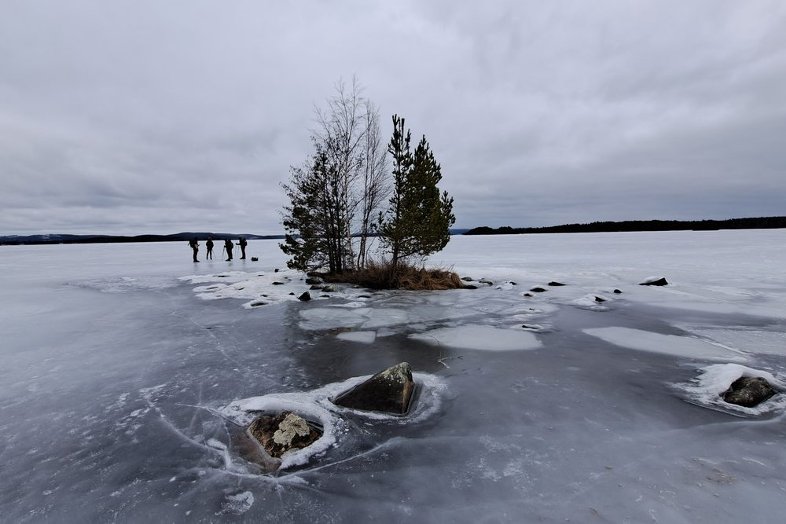

Ankomst
Du anländer till boendet i Falun. Dags att göra i ordning din utrustning och redan ta en titt på isen.

Åk skridskor på historisk is i Dalarna, med Faluns karaktäristiska röda gruvbyggnader i bakgrunden.

Åk skridskor över en sjö där man arbetat och levt i århundraden.
Falun ligger i Dalarna, precis som Orsa, vid Runns norra strand - landskapets stora sjö. Staden har fått sitt namn från kopparbrytningen som pågick där i århundraden - därav de röda gruvbyggnaderna du ser från isen.
Vad du exakt kommer att åka är aldrig bestämt i förväg. Du åker självständigt, och naturis går inte att planera: vädret och iskvaliteten avgör varje dag var du kan åka.
Du bokar Falun som ett komplett paket: flyget, hyrbilen och boendet är ordnade, och du väljer själv när du åker.
Precis som i Orsa bor du i egna stugor nära isen, så att ni sitter tillsammans på kvällen och kliver rakt ut på morgonen.
Boendet för Falun fastställs just nu. Så snart det är klart publicerar vi det här.
Falun är en paketresa som du sätter ihop själv: du väljer din ankomstdag och hur länge du stannar, från 4 dagar. Flyget, hyrbilen och boendet ingår. Ordnar du hellre flyget eller transporten själv bockar du av det och beloppet dras från priset.
Du väljer din ankomstdag och stannar minst 4 dagar.
Du sätter ihop resan och betalar direkt online.
Flyget, hyrbilen och boendet ingår. Ordnar du något av det själv dras det från priset.
Ordningen ligger fast, innehållet inte. Var du åker skridskor väljer du själv varje dag, utifrån vädret och isen.
Du anländer till boendet i Falun. Dags att göra i ordning din utrustning och redan ta en titt på isen.
Lugn start på den sopade banan, så att du vänjer dig vid naturisen och skridskorna.
Varje morgon tittar du på vädret och iskvaliteten, och bestämmer vart du ska. Ibland är det den långa banan över sjön, ibland söker du dig till annan is i närheten. Under vägen stannar du för en paus; om tillfälle ges, med en eld.
Beroende på din restid finns det på morgonen ofta utrymme för en sista sväng över isen innan du åker.
Det exakta antalet dagar beror på resedatumet. Så snart det är fastställt anpassas programmet efter det.
Osäker på om något ingår? Fråga bara, så vet du säkert.
Inte som standard: Falun är en paketresa som du bokar själv. Flyget, hyrbilen och boendet ingår, tillsammans med onlineservice i förväg. På isen åker du självständigt, utan guidning. Vill du inte ge dig ut på isen på egen hand kan du mellan den 10 januari och den 20 februari boka till guidning på isen: 100 € per dag för 1 person, + 50 € per dag för varje extra person, för så många dagar du vill.
Det som ingår är flyget till Sverige, hyrbilen på plats, boendet i stugorna och onlineservice i förväg. Det som inte ingår är din egen skridskoutrustning och vinterkläder, obligatorisk säkerhetsutrustning (isdubbar och hjälm), mat och dryck samt försäkringar. Ordnar du hellre flyget eller hyrbilen själv dras det beloppet av från priset.
Skridskoresan till Falun kostar från 995 € per person för 4 dagar. Resedatumen för säsongen 2026/2027 fastställs just nu; så snart de är klara publicerar vi dem här.
Du behöver inte vara tävlingsåkare, men du måste kunna åka skridskor självständigt och kontrollerat. Är du osäker på din nivå tänker Joey igenom det tillsammans med dig i förväg.
Falun är en bra första kontakt med skandinavisk naturis, just för att flyget, hyrbilen och boendet redan är ordnade. Som standard åker du skridskor självständigt, och det kräver att du själv kan bedöma om isen är säker. Mellan den 10 januari och den 20 februari kan du boka till guidning på isen. Men det är fortfarande naturis: god förberedelse hör till.
Naturis går inte att garantera. Vädret och iskvaliteten avgör varje dag var du kan åka. Vid behov byter du till en annan lämplig sjö i närheten.
Du tar med din egen skridskoutrustning och vinterkläder. För naturis rekommenderar vi långfärdsskridskor; kläderna ska vara lämpliga för att vara ute en hel dag. Isdubbar och hjälm är obligatoriskt.
Ja. Skridskoturerna är alltid beroende av vädret och iskvaliteten. Titta därför varje dag på nytt på förhållandena och anpassa din rutt efter det. Ingen dag är helt bestämd i förväg.
Priset börjar på 995 € per person för 4 dagar när ni är två. Flyg, hyrbil och boende ingår. Ordnar du flyget eller transporten själv dras det från priset.
Så snart kalendern laddats väljer du din ankomstdag här. Fungerar det inte, mejla schaatsennovakse@outlook.com.
Orsa och Finland åker du, precis som Falun, självständigt. I Orsa kan du också boka till guidning på isen.